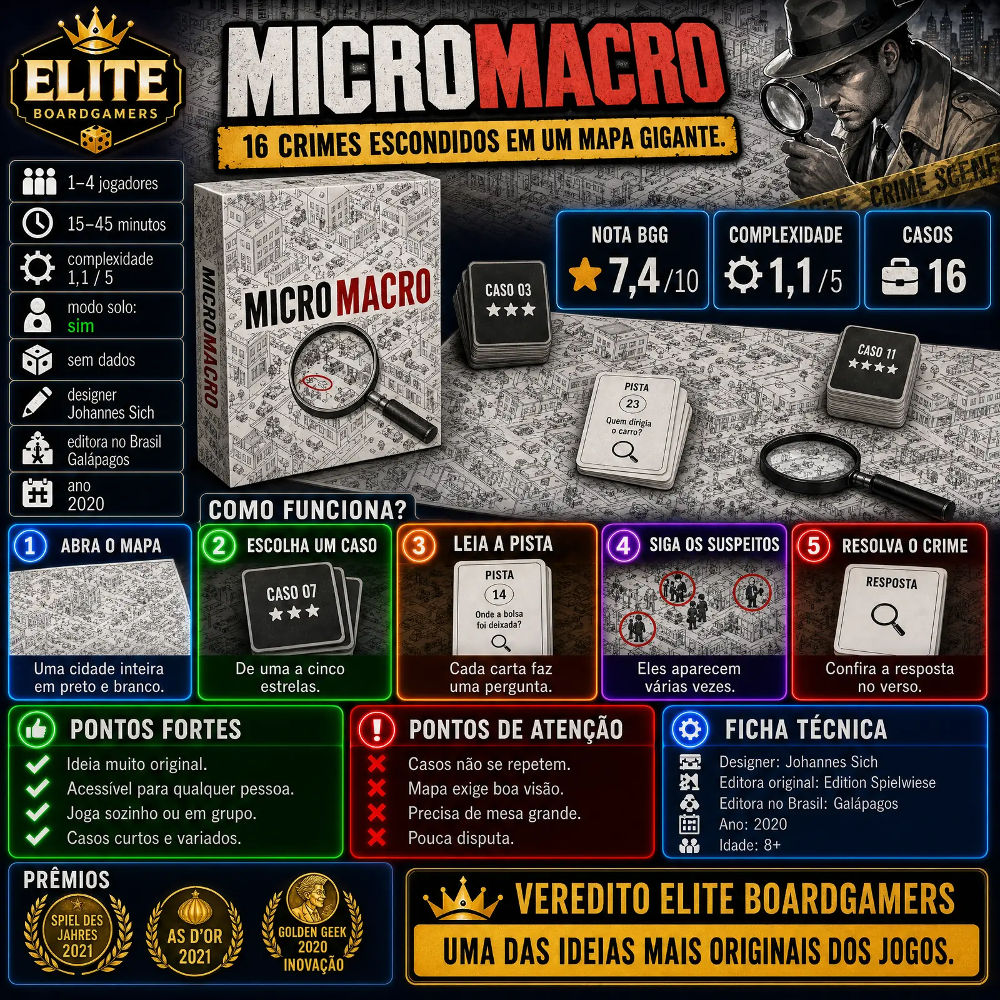

MicroMacro: Crime City, lançado no Brasil como A Cidade do Crime, é uma investigação cooperativa em um mapa enorme, no estilo 'Onde está Wally?'. Venceu o Spiel des Jahres e o As d'Or em 2021 e os Golden Geek de jogo leve e de inovação em 2020.

| Ano | 2020 |
|---|---|
| Designer | Johannes Sich |
| Editora original | Edition Spielwiese |
| Editora no Brasil | Galápagos (A Cidade do Crime) |
| Jogadores | 1 a 4 |
| Duração anunciada | 15 a 45 minutos |
| Idade | 8+ (Wikipedia; algumas lojas brasileiras indicam 14+) |
| Nota BGG | 7,4 / 10 |
| Peso BGG | 1,1 / 5 (relatos entre 1,08 e 1,21) |
| Nota Ludopedia | não confirmado nas fontes consultadas |
| Modo solo oficial | Sim (1 a 4 jogadores) |
| Componentes | Mapa de cerca de 115×75 cm e 16 casos com dificuldade de 1 a 5 estrelas |
Números do BoardGameGeek obtidos por busca; o peso varia entre as fontes. O ranking geral foi omitido.
O grupo abre um mapa enorme, em preto e branco, de uma cidade cheia de gente fazendo coisas do dia a dia. Escondidos nele estão vários crimes, e cada personagem aparece em vários momentos do mesmo dia.
Cada caso é um pequeno baralho de 5 a 12 cartas. A primeira mostra a vítima e a cena; as seguintes fazem perguntas: quem fez, por onde fugiu, onde escondeu a arma. O grupo procura as respostas no mapa, seguindo os personagens.
Não há turnos nem pontuação: todos procuram juntos e conferem as respostas no verso das cartas. São 16 casos, com dificuldade de uma a cinco estrelas.
Investigar seguindo personagens num mapa gigante é uma proposta que nenhum outro jogo fazia; daí o Golden Geek de Inovação.
Sem turnos, sem regras para decorar: dá para jogar com crianças, famílias e quem nunca jogou.
Funciona de 1 a 4 jogadores, e o grupo pode pausar e retomar quando quiser.
Cada caso leva poucos minutos, e a dificuldade sobe aos poucos.
Depois de resolvidos, os casos não têm por que ser jogados de novo, como observa a resenha da Zatu sobre a série. A editora oferece casos extras para imprimir.
O mapa é muito detalhado; a Meeple Mountain relata dificuldade para ler de perto sem óculos (na continuação Full House). A caixa traz uma lupa.
O mapa ocupa bastante espaço e a regra recomenda uma superfície grande e bem iluminada.
É cooperativo e sem pontuação: quem gosta de competir pode achar morno.
MicroMacro é uma das ideias mais originais dos últimos anos: investigar seguindo personagens num mapa gigante, sem regras para decorar. Os casos se esgotam e o mapa exige boa visão, mas a experiência é única e funciona para qualquer público.
Um mapa, dezesseis crimes, nenhum detalhe à toa.